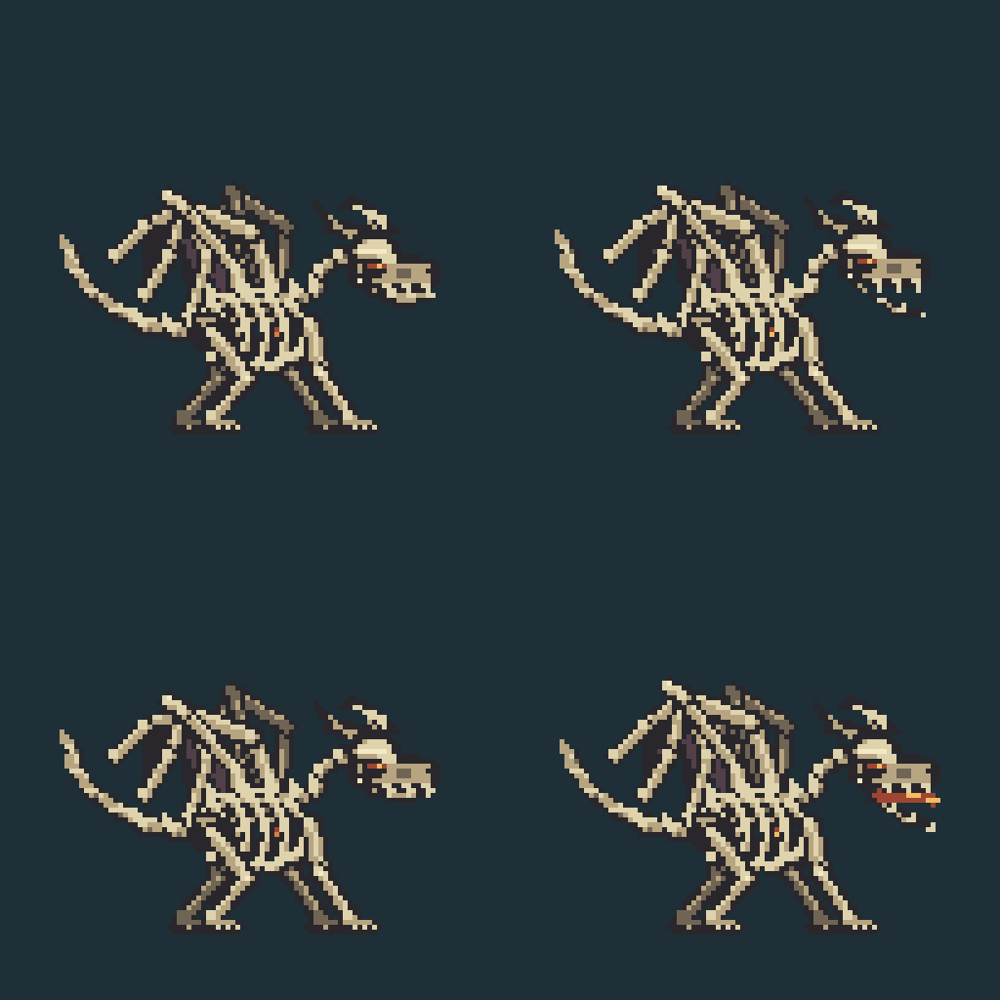
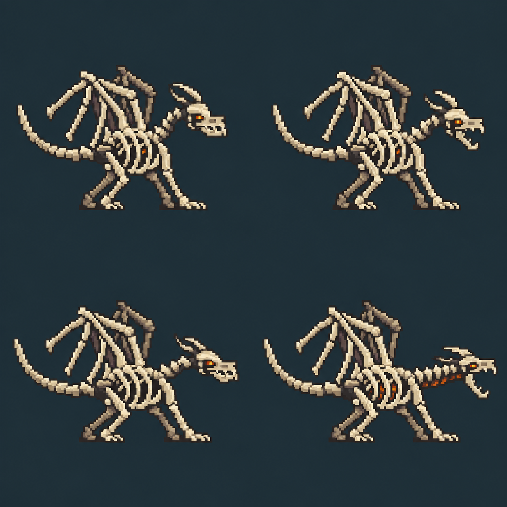

Compare the current artwork with a generated candidate. These are the original design comparisons. The approved dragon and modular player components are now installed in the game.


Left to right, top to bottom: idle, bite anticipation, bite release, breath pose. The candidate is a design study, not a complete attack sequence.
Selected design, now installed with movement, bite, rush, fire-breath and death clips. Fire and projectile effects stay in the engine.